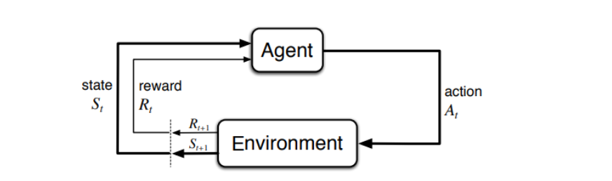

Unit 1: Basics of Reinforcement Learning¶
Reinforcement Learning (RL) is a dynamic AI paradigm where an agent learns to make decisions by interacting with an environment to maximize cumulative rewards. This unit explores RL’s applications, framework, comparison with other learning types, characteristics, problem elements, and immediate RL.
What Are the Real-World Applications of Reinforcement Learning?¶
Reinforcement Learning powers systems that require adaptive decision-making in complex, dynamic environments. Its applications span multiple domains, leveraging trial-and-error learning to optimize outcomes. Key examples include:
- Toddler Learning to Walk: A child experiments with steps, receiving feedback (stability or falling), and refines movements to walk steadily, mirroring RL’s reward-driven learning.
- Game-Playing Agents: Systems like DeepMind’s AlphaGo and OpenAI’s Dota 2 bot learn optimal strategies by playing millions of games, maximizing scores or wins.
- Robotics: Robots use RL to master tasks like grasping objects or navigating spaces, optimizing actions based on sensor feedback (e.g., +10 for a successful grasp).
- Autonomous Vehicles: Self-driving cars adjust speed, steering, or lane changes to maximize safety and efficiency, using rewards tied to traffic rules and collision avoidance.
- Healthcare: RL optimizes treatment plans, such as adjusting drug dosages for chronic diseases, maximizing patient recovery metrics.
- Finance: Trading algorithms learn to buy or sell stocks to maximize profits, with rewards based on portfolio growth.
- Smart Grids: RL manages energy distribution in power systems, optimizing for cost, demand, and sustainability.
- Recommendation Systems: Platforms like Netflix use RL to suggest content, maximizing user engagement (e.g., time spent watching).
Mnemonic: RL Applications
"GAMES": Games, Autonomous systems, Medicine, Energy, Stock trading.
Why RL Excels
RL thrives in scenarios where explicit instructions are impractical, and learning from interaction is the only viable approach.
Explain the RL Framework. What Are Its Core Components?¶
The RL framework models an agent learning optimal behavior through interaction with an environment. The agent observes the environment’s state, takes actions, receives rewards, and updates its strategy to maximize long-term rewards. This iterative process is formalized as a Markov Decision Process (MDP).
Core Components¶
- Agent: The learner or decision-maker (e.g., a robot, game AI).
- Environment: The external system the agent interacts with (e.g., a maze, stock market).
- State (S): A snapshot of the environment at a given time (e.g., the agent’s position in a grid).
- Action (A): Choices the agent can make (e.g., move left, buy stock).
- Reward (R): A scalar feedback signal indicating the action’s success (e.g., +100 for reaching a goal).
- Policy (π): The agent’s strategy, mapping states to actions (deterministic: π(s) = a, or probabilistic: π(a|s)).
- Value Function (V or Q): Estimates the expected cumulative reward for a state (V(s)) or state-action pair (Q(s, a)).
- Transition Function (P): Defines the probability of moving to a new state given a state and action (P(s’|s, a)).
- Discount Factor (γ): Balances immediate vs. future rewards (0 ≤ γ ≤ 1; e.g., γ = 0.9 prioritizes long-term gains).
RL Process Flow¶
The agent-environment interaction forms a loop, as shown in this Mermaid diagram:

How It Works¶
- The agent observes the current state \( s_t \).
- Based on its policy \( \pi \), it selects an action \( a_t \).
- The environment responds with a reward \( r_{t+1} \) and a new state \( s_{t+1} \).
- The agent updates its policy or value function to improve future decisions.
- The cycle repeats, aiming to maximize the cumulative reward:
Definition: RL Framework
RL is a sequential decision-making process where an agent learns an optimal policy by trial and error to maximize expected discounted rewards.
What Are the Different Types of Learning in AI?¶
AI learning paradigms vary based on data and feedback mechanisms. The three primary types are:
Supervised Learning:
- Uses labeled datasets (input-output pairs) to train models.
- Goal: Predict accurate outputs for new inputs.
- Example: Classifying images as “cat” or “dog” using labeled images.
- Applications: Spam detection, speech recognition, regression.
Unsupervised Learning:
- Works with unlabeled data to find hidden patterns or structures.
- Goal: Group or organize data without predefined outputs.
- Example: Clustering customers based on purchasing behavior.
- Applications: Market segmentation, anomaly detection, data compression.
Reinforcement Learning:
- Learns through interaction with an environment, guided by rewards.
- Goal: Maximize cumulative rewards through trial and error.
- Example: A robot learning to navigate a maze by earning rewards for reaching the exit.
- Applications: Game AI, robotics, resource optimization.
Mnemonic: AI Learning Types
"SUP": Supervised (predict), Unsupervised (pattern), P for RL (policy/reward).
Compare and Contrast Supervised, Unsupervised, and Reinforcement Learning¶
The table below provides a detailed comparison of the three learning paradigms:
| Aspect | Supervised Learning | Unsupervised Learning | Reinforcement Learning |
|---|---|---|---|
| Data | Labeled (input-output pairs, e.g., images with labels) | Unlabeled (raw data, e.g., customer transactions) | No predefined dataset; generated via environment interaction |
| Goal | Minimize prediction error to match labels | Discover patterns, clusters, or representations | Maximize cumulative reward over time |
| Feedback | Direct feedback (correct labels) | No feedback; relies on data structure | Sparse, delayed rewards from environment |
| Learning Process | Train on static dataset, optimize loss (e.g., MSE) | Iterative pattern discovery (e.g., k-means) | Trial-and-error, policy optimization |
| Example | Predicting house prices from features | Grouping similar news articles | Training a drone to avoid obstacles |
| Challenges | Requires large labeled datasets | Hard to evaluate results without labels | Balancing exploration vs. exploitation |
| Applications | Image recognition, natural language processing | Dimensionality reduction, clustering | Autonomous systems, game AI, optimization |
| Environment Interaction | None; data is static | None; data is static | Dynamic; actions affect future states |
| Time Horizon | One-shot predictions | One-shot or iterative analysis ** | Sequential, long-term decision-making |
Key Difference
RL’s dynamic interaction and delayed rewards distinguish it from supervised and unsupervised learning, which rely on static datasets and immediate feedback.
Common Pitfall
Misapplying supervised learning to sequential decision tasks (like robotics) can fail, as it doesn’t account for action-state dependencies, unlike RL.
List and Explain Characteristics of RL¶
RL’s unique characteristics define its approach to learning:
Trial-and-Error Learning:
- Agents learn by experimenting with actions and observing outcomes.
- Example: A robot tries different arm movements to pick up an object, refining based on success or failure.
Delayed Rewards:
- Rewards may come after a sequence of actions, requiring the agent to plan for long-term outcomes.
- Example: In chess, the reward (win/loss) is only received at the game’s end.
Dynamic Environment:
- The environment changes based on the agent’s actions, creating a feedback loop.
- Example: A self-driving car’s actions (e.g., braking) alter traffic conditions.
No Supervisor:
- Unlike supervised learning, RL relies on reward signals, not explicit instructions.
- Example: A game AI learns strategies without being told the “correct” move.
Exploration vs. Exploitation:
- Agents must balance exploring new actions (to discover better strategies) with exploiting known rewarding actions.
- Example: A trading bot tests new stocks (exploration) but focuses on profitable ones (exploitation).
Sequential Decision-Making:
- Actions influence future states and rewards, requiring foresight.
- Example: In a maze, moving left now may block a future path.
What Are the Key Elements of an RL Problem?¶
An RL problem is formalized as a Markov Decision Process (MDP), which includes the following elements:
Set of States (S):
- All possible configurations of the environment.
- Example: In a grid world, states are the agent’s coordinates (x, y).
Set of Actions (A):
- All possible decisions the agent can make.
- Example: Move {up, down, left, right} in a maze.
Reward Function (R):
- Maps state-action pairs (or states) to a scalar reward.
- Example: R(s, a) = +100 for reaching the goal, -1 for hitting a wall.
Transition Probability (P):
- Defines the likelihood of moving to a new state given a current state and action (P(s’|s, a)).
- Example: Moving right in a deterministic grid moves to (x+1, y).
Discount Factor (γ):
- A value (0 ≤ γ ≤ 1) that balances immediate vs. future rewards.
- Example: γ = 0.9 discounts future rewards, prioritizing near-term gains.
Policy (π):
- The agent’s strategy, mapping states to actions (π(s) = a or π(a|s) for probabilistic policies).
- Example: A policy might dictate “always move toward the goal.”
Example: Maze Navigation¶
- States: Grid cells (e.g., (2, 3)).
- Actions: {up, down, left, right}.
- Rewards: +100 for reaching the exit, -1 for each step.
- Transitions: Deterministic (move right from (1, 1) goes to (2, 1)).
- Discount Factor: γ = 0.95.
- Policy: Move toward the exit while avoiding walls.
Formula: Objective
The agent seeks to maximize the expected cumulative reward: [ G_t = R_{t+1} + \gamma R_{t+2} + \gamma^2 R_{t+3} + \dots ] where \( G_t \) is the discounted return at time \( t \).
What Is Immediate Reinforcement Learning?¶
Immediate Reinforcement Learning is a simplified RL setting where the agent receives rewards immediately after each action, eliminating the complexity of delayed rewards.
- Characteristics:
- Rewards are tied directly to the action just taken, providing instant feedback.
- Simplifies learning, as the agent doesn’t need to account for future states or long-term consequences.
- Often used in controlled or educational environments to teach RL basics.
- Example:
- In a tic-tac-toe game, the agent gets +10 for placing a mark that wins the game immediately.
- In a slot machine simulation, each pull yields an instant reward (+5 or 0).
- Advantages:
- Faster learning due to clear action-reward associations.
- Easier to implement and debug in simple environments.
- Limitations:
- Rarely reflects real-world scenarios, where rewards are often delayed (e.g., winning a chess game requires many moves).
- Less applicable to complex tasks requiring strategic planning.
- Comparison to Standard RL:
- Standard RL handles delayed rewards, requiring algorithms like Q-learning or policy gradients to estimate future rewards.
- Immediate RL is a special case, often used in bandit problems (e.g., choosing the best slot machine).
Mnemonic: Immediate RL
"AIR": Action, Instant Reward.
Practical Note
Immediate RL is useful for prototyping or teaching but should transition to delayed reward models for real-world applications.